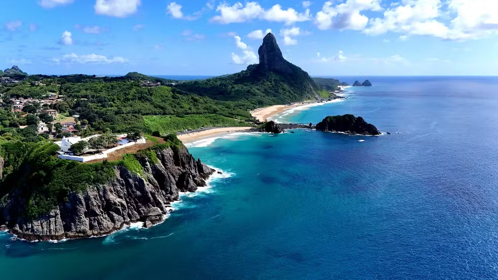
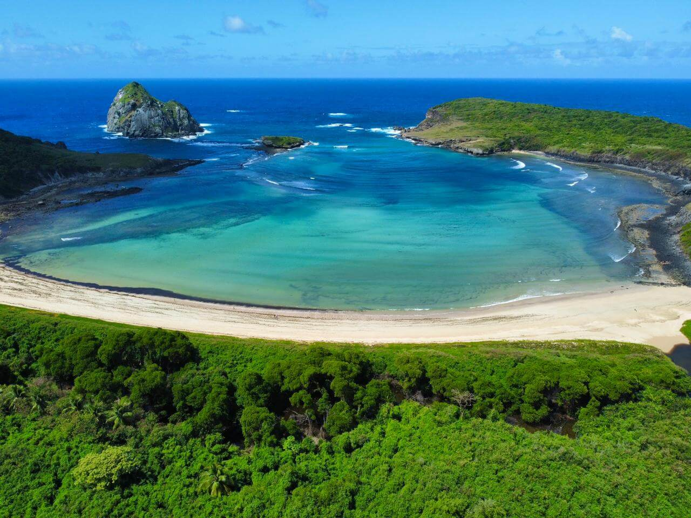
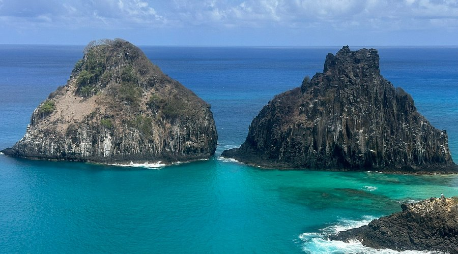

A cerca de 545 quilômetros da costa de Pernambuco, em pleno oceano Atlântico, ergue-se um pequeno conjunto de ilhas vulcânicas que, apesar de ocupar uma área de pouco mais de 26 quilômetros quadrados, concentra uma das paisagens mais extraordinárias de todo o litoral brasileiro. Fernando de Noronha, nome que designa tanto o arquipélago quanto sua ilha principal, é ao mesmo tempo um destino turístico cobiçado, uma reserva ambiental de importância mundial e um laboratório vivo de conservação marinha. Sua origem remonta a atividades vulcânicas ocorridas há milhões de anos, que formaram um relevo acidentado, dominado por picos rochosos, falésias abruptas e formações geológicas singulares, das quais o Morro do Pico, com seus 323 metros de altitude, é o exemplo mais emblemático e o cartão-postal mais reconhecível do lugar.

A história humana do arquipélago começou oficialmente em 1503, quando expedições portuguesas, possivelmente lideradas por Américo Vespúcio a serviço da Coroa, avistaram e registraram a existência das ilhas. O nome “Fernando de Noronha” viria a homenagear o comerciante português Fernão de Loronha, a quem o território foi concedido em regime de capitania hereditária pouco tempo depois. Ao longo dos séculos seguintes, a posição estratégica do arquipélago, situado bem no meio das rotas marítimas que ligavam a Europa às Américas, despertou o interesse de diferentes potências coloniais. Franceses, holandeses e portugueses disputaram o controle da ilha em diversos momentos, deixando marcas que ainda hoje podem ser observadas nas ruínas de fortificações espalhadas pelo território, como o Forte Nossa Senhora dos Remédios e outras estruturas defensivas erguidas para proteger a costa de invasões.Durante boa parte de sua história, Fernando de Noronha teve uma vocação predominantemente militar e penal. O arquipélago abrigou uma colônia penal que funcionou por mais de um século, entre o período imperial e parte do século XX, recebendo prisioneiros considerados perigosos ou politicamente indesejados. Essa condição de isolamento, que por tanto tempo serviu aos propósitos de vigilância e reclusão, acabou por se transformar, de maneira paradoxal, em um dos maiores trunfos ambientais do local: justamente por ter permanecido afastada de um processo intenso de urbanização e exploração econômica predatória, a ilha conservou grande parte de sua vegetação nativa, de sua fauna marinha e de seus ecossistemas costeiros praticamente intactos até a segunda metade do século XX, quando o turismo começou a se tornar uma atividade relevante.
Foi somente a partir das décadas de 1980 e 1990 que Fernando de Noronha consolidou sua vocação atual, tornando-se um símbolo de turismo sustentável no Brasil. Em 1988, uma parcela significativa da ilha principal foi transformada em Parque Nacional Marinho, unidade de conservação federal que impõe restrições rígidas ao uso do solo, à pesca, à construção civil e à circulação de visitantes em determinadas áreas. Anos mais tarde, em 2001, a Organização das Nações Unidas para a Educação, a Ciência e a Cultura (UNESCO) reconheceu o arquipélago, em conjunto com o Atol das Rocas, como Patrimônio Natural da Humanidade, reforçando internacionalmente a importância de sua biodiversidade e a necessidade de preservá-la para as gerações futuras.
O que torna Fernando de Noronha tão especial, do ponto de vista ecológico, é a combinação rara entre águas cristalinas de visibilidade excepcional, recifes de coral em bom estado de conservação, praias de areia branca emolduradas por formações rochosas dramáticas e uma abundância de vida marinha que poucos lugares no mundo conseguem oferecer com tamanha proximidade e acessibilidade. As baías do arquipélago, como a Baía dos Golfinhos, a Baía do Sancho, a Praia do Leão e a Baía dos Porcos, entre tantas outras, formam um mosaico de cenários que vão de piscinas naturais tranquilas a trechos de mar aberto mais agitados, ideais para o surfe em determinadas épocas do ano. Não é incomum que rankings internacionais de turismo elejam a Baía do Sancho como uma das praias mais bonitas do planeta, um reconhecimento que se repete ano após ano e que atesta a força visual e sensorial daquele cenário.
A vida marinha do arquipélago é um capítulo à parte. Fernando de Noronha é mundialmente conhecida por abrigar uma das maiores populações residentes de golfinhos-rotadores do planeta, que costumam entrar em grande número na Baía dos Golfinhos nas primeiras horas da manhã, em um espetáculo natural que atrai pesquisadores e turistas dispostos a acordar cedo para testemunhá-lo.

Além dos golfinhos, as águas do arquipélago são frequentadas por tartarugas marinhas de diferentes espécies, que utilizam as praias locais como área de desova, por tubarões de pequeno e médio porte, arraias, peixes-bois em programas específicos de reintrodução, e uma diversidade extraordinária de peixes recifais que fazem da prática de mergulho livre e mergulho autônomo uma das principais atividades oferecidas aos visitantes. A claridade da água, especialmente durante os meses mais secos do ano, permite observações submarinas de qualidade rara, tornando o arquipélago um destino de referência para mergulhadores de todo o mundo.Consciente da fragilidade desse ecossistema, o poder público brasileiro adotou, ao longo das últimas décadas, uma série de mecanismos de controle destinados a equilibrar a visitação turística com a preservação ambiental. Um dos instrumentos mais conhecidos é a cobrança de uma taxa de preservação ambiental, cujo valor é calculado de forma progressiva conforme o tempo de permanência do visitante na ilha, com o objetivo declarado de desestimular estadias excessivamente longas e financiar as ações de conservação do parque. Paralelamente, existe também um teto diário de visitantes autorizados a desembarcar no arquipélago, política que busca evitar a superlotação das praias e trilhas e reduzir a pressão humana sobre áreas ambientalmente sensíveis. Determinados pontos do parque nacional marinho só podem ser visitados acompanhados de guias credenciados, e algumas praias e trilhas possuem horários específicos de acesso, sobretudo durante o período de desova das tartarugas marinhas, quando a iluminação artificial e a movimentação noturna são rigorosamente restringidas.
Do ponto de vista da infraestrutura, Fernando de Noronha manteve, propositalmente, um perfil discreto e de pequena escala. Não há prédios altos, redes de hotéis internacionais de grande porte ou complexos turísticos massivos como os encontrados em outros destinos litorâneos brasileiros. A hospedagem é predominantemente feita em pousadas de médio e pequeno porte, muitas delas de administração familiar, distribuídas principalmente pela Vila dos Remédios e pela Vila do Trinta, os dois núcleos urbanos mais movimentados da ilha. Essa opção por um modelo de ocupação mais contido é também uma estratégia de gestão ambiental, já que reduz o impacto sobre os recursos hídricos, o sistema de saneamento e a geração de resíduos, questões sempre delicadas em um território insular de dimensões reduzidas e distante do continente.
O acesso ao arquipélago se dá exclusivamente por via aérea, com voos operados a partir de cidades como Recife e Natal, ou por embarcações, geralmente utilizadas por operadores de turismo náutico e por navios de cruzeiro que incluem a ilha em seus roteiros. Essa limitação de acesso, somada às políticas de controle de visitantes, contribui para que Fernando de Noronha mantenha um fluxo turístico relativamente contido se comparado a outros destinos de praia igualmente famosos, o que, por sua vez, ajuda a preservar tanto a qualidade da experiência do visitante quanto a saúde dos ecossistemas locais.
Além das praias e da vida marinha, o arquipélago oferece um conjunto expressivo de trilhas ecológicas que atravessam sua vegetação nativa, formada majoritariamente por espécies adaptadas ao clima semiárido insular, com plantas de pequeno porte, cactáceas e árvores resistentes à escassez sazonal de água doce.

Mirantes espalhados pela ilha permitem observar, de diferentes ângulos, tanto o oceano aberto quanto as formações rochosas que se projetam sobre o mar, como os famosos “Dois Irmãos”, dois picos gêmeos que se tornaram, ao lado do Morro do Pico, um dos símbolos visuais mais reproduzidos em fotografias e materiais promocionais sobre o destino.A vida cotidiana em Fernando de Noronha também reflete essa singularidade. A população residente, relativamente pequena, convive com regras específicas de ocupação territorial, já que grande parte da ilha pertence à União e está sob regime de proteção ambiental, o que limita a expansão urbana e a especulação imobiliária de maneira muito mais rígida do que ocorre na maior parte do território brasileiro. Essa combinação entre restrição fundiária, controle de visitantes, taxação ambiental e valorização do ecoturismo fez de Fernando de Noronha um caso frequentemente citado, tanto no Brasil quanto no exterior, como exemplo de destino que conseguiu, ainda que com desafios e imperfeições, equilibrar a exploração turística com a preservação de um patrimônio natural de valor inestimável.
Por tudo isso, Fernando de Noronha ultrapassa a condição de simples destino de férias e se consolida como um símbolo daquilo que a costa brasileira tem de mais raro: um território onde o mar permanece transparente, a vida marinha ainda prospera em abundância visível a olho nu, e a paisagem, moldada por forças vulcânicas milenares, continua a impressionar tanto quem a visita pela primeira vez quanto quem já perdeu a conta de quantas vezes retornou àquelas águas. Entre a história de colônia penal, o reconhecimento como patrimônio da humanidade e o status atual de reserva ecológica de referência mundial, o arquipélago segue reinventando, a cada geração, a maneira como o Brasil se relaciona com um de seus tesouros naturais mais preciosos.